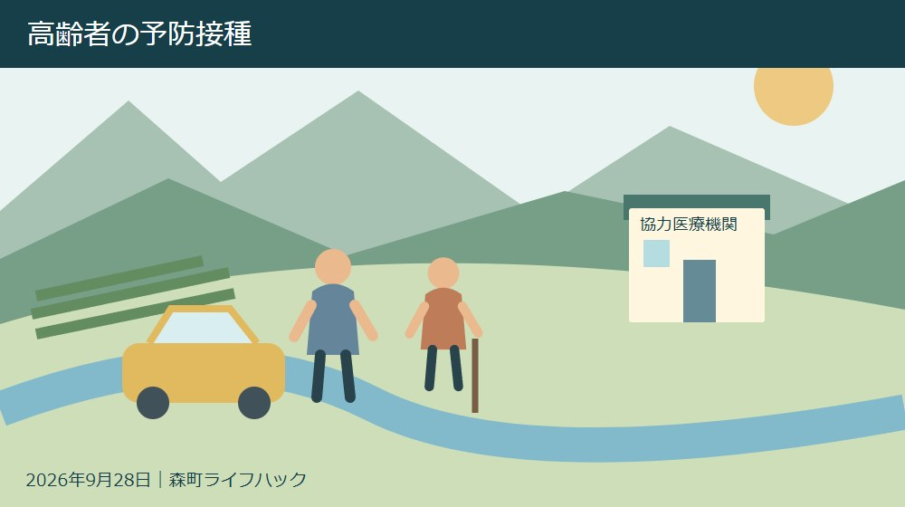
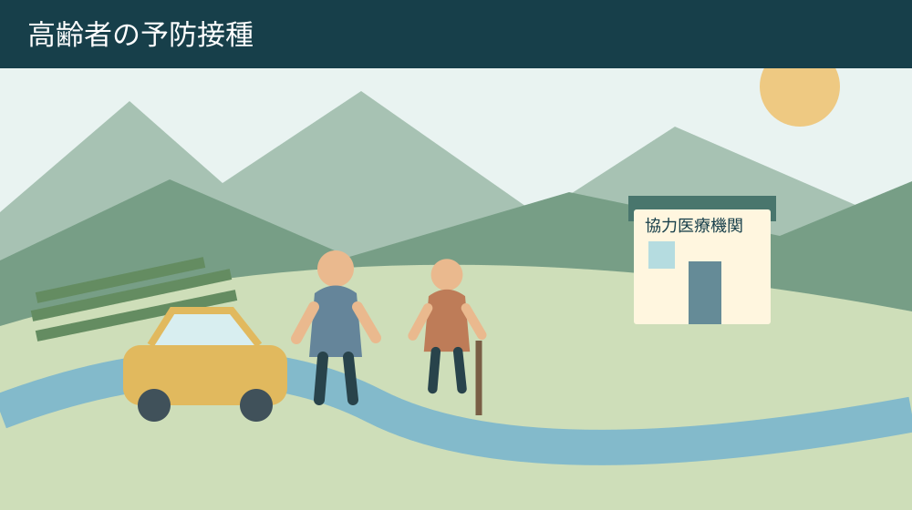
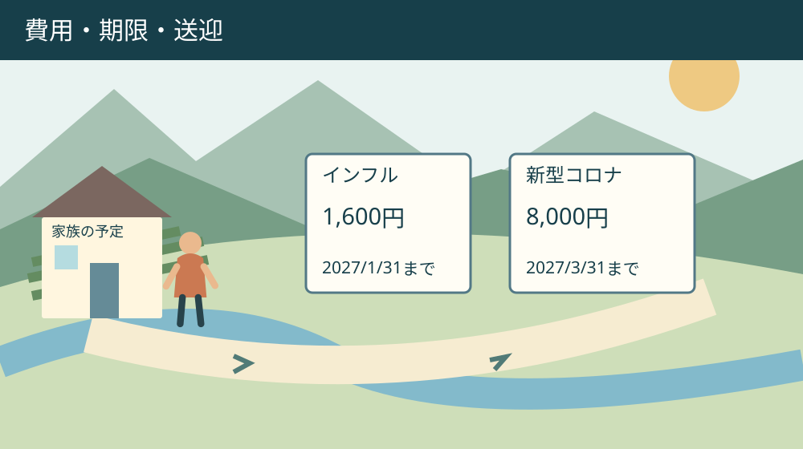

手続き・相談・家族の段取り
森町の高齢者予防接種｜インフルとコロナの助成比較

Q. 親のインフルとコロナの助成は、費用も期限も同じ？
A. 森町の2026年度助成は、インフルエンザが自己負担1,600円・2027年1月31日まで、新型コロナが8,000円・3月31日までです。どちらも10月1日開始、期間内1回限り。接種日の年齢等の条件を確認し、協力医療機関へ事前予約します。今日は本人が希望する医院の予約方法を確かめてください。
親の予防接種は予約と送迎を一緒に考える
森町に住む親の通院を支える家族は、診療時間だけでなく、仕事を抜ける時間や車の手配も調整しています。予約の電話をかけ、本人の希望を聞き、必要な書類を探す。その負担を前提に、2026年度の高齢者インフルエンザと新型コロナの助成を比べます。
二つの助成は2026年10月1日に始まりますが、自己負担と終了日が違います。同じ秋の予防接種として一つの日程に整理すると、期限を取り違えるおそれがあります。家族の予定表でも、インフルエンザと新型コロナを別の行にして扱います。
私は大石浩之（磐田市／不動産業）です。この記事は、どの接種を受けるべきかを判断する医療記事ではありません。森町の費用助成の条件と予約の順番を整理し、本人が医師と相談するための家族の段取りを考える記事です。
移動を支える人の都合だけで接種日を決めることも、本人任せにして予約を放置することも避けたいところです。今日は希望する医院の予約方法を一つ確認する。それなら接種を決める前にも、家族が動ける条件を確かめられます。
森町の二つの助成は自己負担と期限が違う
森町公式の二つの案内を2026年9月28日に確認しました。高齢者インフルエンザ定期接種の実施期間は2026年10月1日から2027年1月31日、自己負担は1,600円です。新型コロナウイルスワクチン定期接種は2027年3月31日までで、自己負担は8,000円です。
助成はそれぞれの実施期間内に1回限りです。「二つ合わせてどちらか1回」という意味ではありません。一方、同じ種類を期間内に繰り返し助成で受けられるわけでもありません。接種した種類と日付を記録すると、家族間の思い違いを防げます。
二つの自己負担を比べると、新型コロナはインフルエンザより6,400円高く、金額は5倍です。両方を各1回、記載どおりの自己負担で受ける場合の合計は9,600円になります。これは1,600円と8,000円を足した接種費用で、交通費等は含めていません。
私は、この差を接種の価値や効果の優劣へ読み替えません。家計の準備に使う数字だからです。同じ対象者に同じ開始日で案内されていても、財布から出る金額と使える期間が違う。そこが家族の予約準備で見落としたくない点です。
| 接種 | 自己負担 | 助成期間 |
|---|---|---|
| インフルエンザ | 1,600円 | 2026年10月1日～2027年1月31日 |
| 新型コロナ | 8,000円 | 2026年10月1日～2027年3月31日 |
対象年齢は予約日ではなく接種日で見る
森町の両制度は、森町内に住民票がある65歳以上の人が対象です。60歳以上65歳未満でも、心臓・腎臓・呼吸器や免疫機能に所定の障がいがある人は対象に含まれます。単に持病があるという理由だけで対象と判断する仕組みではありません。
町は障がいの条件を身体障害者手帳1級相当と案内しています。該当する機能や状態の詳しい条件は、各公式ページと健康づくり係で確認します。家族が病名だけから判断せず、接種を相談する医院にも本人の状況を伝えてください。
年齢の基準日は接種日です。予約をした日に64歳でも、接種日には65歳になる場合があるため、誕生日と予約日を別に見ます。逆に、年度内に65歳になるから、誕生日前でも年齢条件を満たすとは限りません。対象となる接種日を確認します。
親が森町で暮らしていても、住民票が別の自治体にある場合は、森町の助成を利用できると決め付けません。住んでいる場所、住民票、受診する医院の所在地は別の情報です。家族の相談メモにも三つを分けておくと、窓口へ説明しやすくなります。
森町の対象条件は、接種するかどうかの医学的判断とは別です。体調、治療、接種歴などを踏まえた相談は医師へ行います。この記事の年齢や金額の表だけで、ご家族の接種の可否や時期を決めないようにしてください。

医院の実施期間は町の期限と同じとは限らない
森町公式は、各医療機関の実施期間が異なる場合があると案内しています。町のインフルエンザ助成が2027年1月31日まででも、希望する医院がその日まで予約を受けるとは限りません。助成の終了日を、医院の最終予約日として使わないことが必要です。
予約は町内、袋井市内、磐田市内の協力医療機関へ事前に行います。三つの地域にある全ての医院が対象、という意味ではありません。町が掲載する協力医療機関一覧と、希望する医院の予約案内を照合してから電話します。
インフルエンザと新型コロナの協力医療機関一覧は、公式ページでそれぞれ確認できます。一方の一覧に載っている医院が、もう一方も同じ条件で扱うとはここでは断定しません。予約時にはワクチンの名称を伝え、どちらの相談かを明確にします。
協力医療機関以外での接種を希望する場合は、森町の健康こども課健康づくり係へ問い合わせる案内です。接種した後で助成を申請すればよい、と自己判断しないでください。町外のかかりつけ医を希望するときこそ、予約や接種の前に方法を聞きます。
予診票は医療機関から受け取ります。自宅へ届く通知を待つことだけを予約の開始条件にしないようにします。受取り方や事前記入の扱いは医院に聞き、家族が代わりに記入してよい範囲も確認します。本人にしか分からない体調まで推測で埋めません。
持ち物と接種歴を別々に確認する
森町が案内する持ち物は、マイナンバーカードや運転免許証など年齢が確認できるものです。障がいの条件で対象となる人は身体障害者手帳も持参します。診察券など医院が求めるものは、予約時に追加で確認してください。
接種の種類、過去の接種日、本人が医師に伝えたいことを整理すると、電話と受診の説明がつながります。これは町が一律に提出を求める書類ではなく、家族の準備メモです。医療上の判断に必要な情報は医院の指示に従って用意します。
家族が別々の医院へ予約を入れないよう、予約担当を一人決める方法を提案します。接種する本人の意思を確認し、その担当者が家族へ日時と場所を共有します。本人が自分で予約する場合は、家族は送迎できる日を伝える役割でも構いません。
保険や介護の書類と混ざって探しにくい場合は、保険・介護の書類整理の記事も参照できます。ただし各制度の書類は目的が違います。予防接種の予約に必要なものだけを取り出し、全てを持参する前提にはしません。
良い点は費用と予約の入口が具体的なこと
森町の助成案内の良い点は、対象、自己負担、期間、持ち物、接種方法が分かれていることです。家族が本人と相談するとき、費用の話と年齢の話を混ぜずに読めます。1,600円と8,000円が明示されているため、予約前に予算を考えられます。
町内だけでなく、袋井市内や磐田市内の協力医療機関も予約先になることは、普段の受診先との関係で判断する材料になります。私は、住民が既に通う場所を確認しながら選べる点を評価します。ただし医院ごとの受入条件は、個別に確かめる必要があります。
接種日の年齢を基準とすることや、医療機関によって実施期間が異なることまで書かれている点も役立ちます。案内を急いで読むと飛ばしやすい注意ですが、予約し直しを避けるための条件です。本文の金額だけを抜き出して家族へ送らないようにします。
私は、費用が明確なら、次は移動の予定を同じ紙に置くのがよいと考えます。医院へ行ける手段が見つからなければ、助成の存在だけでは利用につながりません。地域タクシーの予約の記事は、利用地区や条件を確認する入口として使えます。
注文したい点は二つの期限を一緒に見たいこと
森町の予防接種助成は別ページで案内されているため、家族は二つの期間を自分で並べる必要があります。私は、親の予約を支える人向けに、開始日、終了日、自己負担を一度に照合できる案内があると助かると考えます。制度をまとめるのでなく、違いを見えるようにする注文です。
9,600円という合計額が分かっても、送迎のために休む時間や交通費は家庭ごとに違います。費用の余裕があるかだけでなく、予約を取れる曜日と付き添いの必要性も聞きます。家族一人が全て調整する方法では、継続的な通院支援の負担が積み重なります。
同じ日に二つを受ければ移動が減るのか、日を分ける方がよいのか。私は家族の段取りとして気になりますが、この記事では決められません。同時接種や間隔、本人の体調に関する判断は医師へ相談し、予約枠の都合だけを理由に決めないようにします。
期限が長い新型コロナの方を後回しにすべきとも断定しません。年齢、希望、受診予定、医師の助言で順番は変わります。今日の一歩は医院の予約方法を確認することであり、二つの接種日を家族だけで確定することではありません。

対案・結論：希望する医院へ予約方法を聞く
森町の高齢者予防接種を準備する今日の行動は、本人が希望する医院を一つ挙げ、予約方法を確認することです。インフルエンザか新型コロナかを伝え、予約受付、実施期間、予診票の受取り方、持ち物を聞きます。接種を決めていない場合は、そのことも伝えて相談します。
電話前のメモは、氏名、生年月日、森町の住民票の有無、希望する接種、連絡が取れる時間を基本にします。どの情報を求められるかは医院で異なります。家族からの予約を受け付けるか、本人の同意をどう確認するかも、医院の案内に従ってください。
予約が取れたら、接種日、集合する時間、医院名、自己負担、送迎担当、変更時の連絡先を一行ずつ残します。「午前に病院」だけでは家族が別の予定を入れるかもしれません。二つのワクチンを検討するなら、それぞれ独立した予約記録にします。
当日の体調に変化があれば、予定どおり接種することを優先せず医院へ相談します。予約を変える場合は新しい日が助成期間内か、年齢条件を満たすかも確認します。具体的な体調判断は家族の検索だけで済ませず、医療機関の指示を受けます。
助成条件や協力医療機関以外での接種については、森町の健康づくり係、0538-85-6330へ問い合わせます。医院には接種の予約や医学的な相談、町には助成の条件というように質問を分けると、同じ説明を繰り返す負担を抑えられます。
家族に残す比較表は費用・期限・移動の三列
家族で使う比較表には、接種名ごとに費用、助成期限、予約先と移動方法を置きます。インフルエンザは1,600円・2027年1月31日まで、新型コロナは8,000円・2027年3月31日までと書きます。医院の予約日は別欄にして、町の期限と混ぜません。
本人がまだ迷っている場合は、予約済みと書かず「相談前」「医師に確認中」と残します。助成を受けられることと本人が希望することを区別するためです。接種歴や健康情報を家族間で共有する場合も、本人の意向を確認し、必要な範囲に絞ります。
親の住まいを離れた場所から支える家族は、通院だけでなく、普段の暮らしの連絡先も一緒に確認したくなるかもしれません。森町の認知症サポーター講座の記事は、地域で学ぶ入口です。予防接種の判断と、見守りや学びの相談は別々に扱います。
家の維持費や介護費用が重なる場合でも、予防接種の費用だけで住み替えや実家の売却を決める必要はありません。私は、今月の支出と今後の住まいの判断を分けることを勧めます。具体的な負担が見えれば、誰が何を手伝えるかも話しやすくなります。
大石の視点：9,600円の外にある家族の時間
私は、数字を家計に置き直して初めて、支援が使えるかどうかの話になると考えます。両方の自己負担を足すと9,600円です。その外に、医院までの移動と付き添う人の時間がある。接種料金だけを見て負担が軽いと決めることはできません。
私なら、家族の予定表に医院へ行く日だけでなく、予約を確認する日も書きます。これは実際の相談体験ではなく、私の段取りの提案です。本人の希望を聞く人、電話する人、送迎する人を別に考えると、一人へ仕事が集中していることにも気付けます。
森町で親の暮らしを支える人には、既に日々の役割があります。助成の案内を読んだ家族へ、さらに全てを頑張ってほしいとは思いません。私は、比較する項目を絞り、医院へ一つ電話できる状態を作ることから始めたいと考えます。
二つの助成は同じ日に始まり、金額と終了日が異なります。本人の希望と医師の判断を中心に置き、希望する医院の予約方法を今日確認する。費用、期限、移動の三つが見えることを、家族の準備の最初の成果にしてください。
よくある質問
森町のインフルエンザと新型コロナの定期接種費用助成について、家族が予約前に確認したい質問を整理します。制度の対象条件と医学的な接種判断は別であり、個別の体調や接種時期は医師へ相談してください。
インフルエンザと新型コロナの自己負担はいくらですか？
森町の2026年度の案内では、インフルエンザは1,600円、新型コロナは8,000円です。対象者がそれぞれ記載どおりの自己負担で1回ずつ受ける場合、合計は9,600円です。交通費等は含みません。対象条件を満たすか、希望する医院が協力医療機関かを確認し、予約時にも費用を確かめてください。
二つとも2027年3月末まで助成されますか？
終了日は異なります。インフルエンザは2027年1月31日、新型コロナは2027年3月31日までです。開始日はどちらも2026年10月1日で、助成はそれぞれ期間内1回限りです。各医療機関の実施期間が異なる場合もあるため、町の終了日まで必ず予約できると考えず、希望する医院の受付日程を確認してください。
64歳の親でも予約をしてよいですか？
森町の対象年齢は接種日で判断します。65歳の誕生日以降に受ける場合と、それ以前では条件が違います。60～64歳でも所定の障がいがある人は対象になる場合がありますが、持病があるだけで自動的に対象にはなりません。生年月日と接種希望日、住民票の有無を伝え、医院と町へ個別に確認してください。
公式情報源
2026年9月28日確認。制度・金額・日程は変更される場合があります。個別の適用は担当窓口へ、融資や医療などの専門判断は各専門機関へ確認してください。